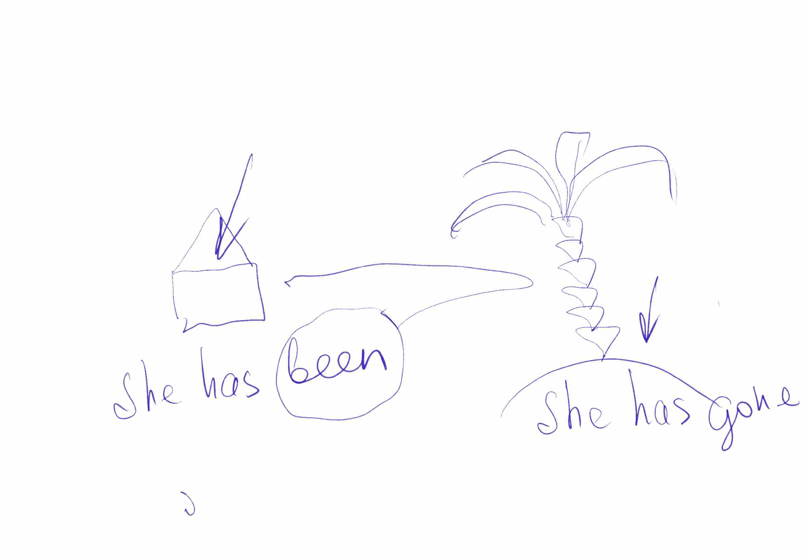

Two little words that both fly with has / have — and they send the person to two different places.
Prepare ahead
Nothing to prepare — the picture, the rule and the game are all on the screen.
2026-10-12 · v1

been — She has been to the palm tree… and look, she’s back at the house.
gone — She has gone to the palm tree… and she’s still there. The house is empty.
has been — went, and came back
has gone — went, and is still there
🧠 Two true lines: both words are purple — both fly with has/have. Only one puts the person back at home. Which one? → been — the round trip. The house doors open for been, and stay empty for gone.
The palm-tree test: can she be at home right now? Yes → been. No → gone.
Max’s bike is not in the yard. The front door is locked from the outside, and his mum is at work.
Question: Max has been to the skate park — or Max has gone to the skate park? → has GONE — nobody is home: the door locked from outside says the trip is one way, for now
Two clues, one question — the empty house picks the word.
Now — go and use one of them before the day ends.